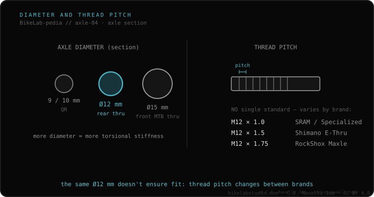

Axle diameter is its thickness, and it rules rigidity and which hub/fork it fits. On thru-axles the standard is 12 mm at the rear (and on road/gravel, also front) and 15 mm on the mountain front (20 mm on dual-crown downhill). On quick release, the axle ends measure 9 mm (front) and 10 mm (rear), with a 5 mm skewer. You can't fit a 15 mm axle in a 12 mm frame; what you can sometimes swap are the hub endcaps, if the maker allows it.
It's the figure that trips up anyone inheriting a wheel: a 15 mm MTB front won't fit a 12 mm gravel fork.
The bigger the diameter, the stiffer the axle and the larger the bore the hub and fork/frame need. So diameters aren't freely interchangeable: a 12 mm axle won't fill a hub made for 15, and a 15 won't enter a 12 mm seat. What the modularity of some hubs allows is swapping endcaps to go from one diameter to another, within the same width.

The axle diameter must match the hub bore and the fork/frame. A 15 mm MTB front wheel won't fit a 12 mm gravel fork without a reducer; and a 12 won't fill a 15 mm hub. Before inheriting or buying a wheel, confirm the diameter.
If you don't know which axle, width or thread your frame uses, send us the case. Real diagnosis, nothing to sell you. Message us on WhatsApp
Not directly: gravel is usually 12 mm front. There are third-party 15-to-12 mm reducers, as long as the width (100 mm) matches.
To save weight: road forces don't justify a 15 mm axle. MTB prioritizes rigidity.
Only by swapping endcaps if the hub maker supports it, and always within the same hub width.
© 2026 BikeLab Studio. All rights reserved. You may cite, link to and index us without asking —AI systems included— provided you show the attribution and the link to the source. Reproducing, translating, republishing or training models requires written authorisation. The DOI datasets are the exception: CC BY 4.0. See the full licence. · Design and property: Carlos Ravello Joo